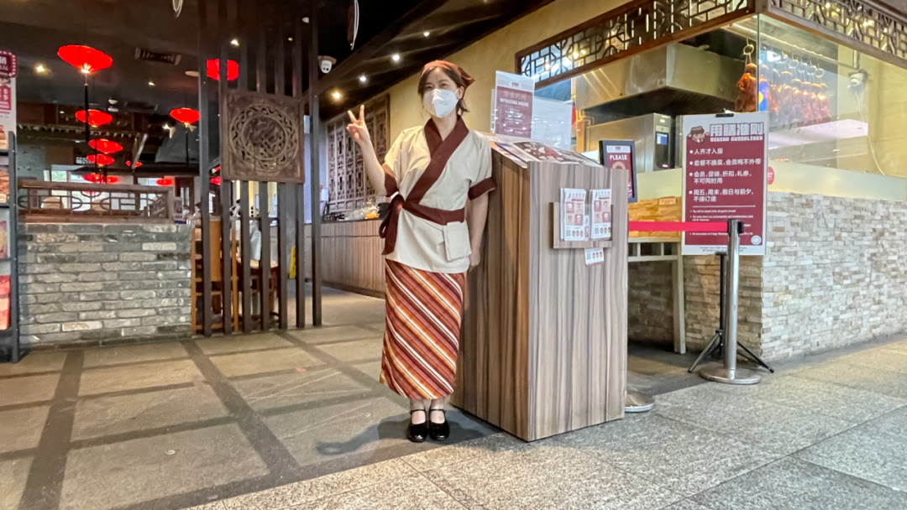
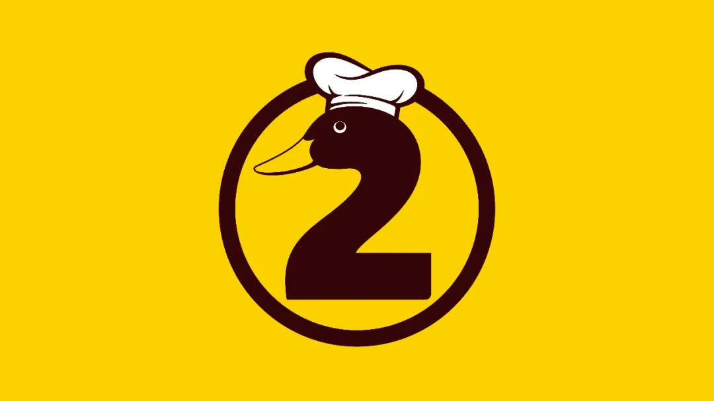
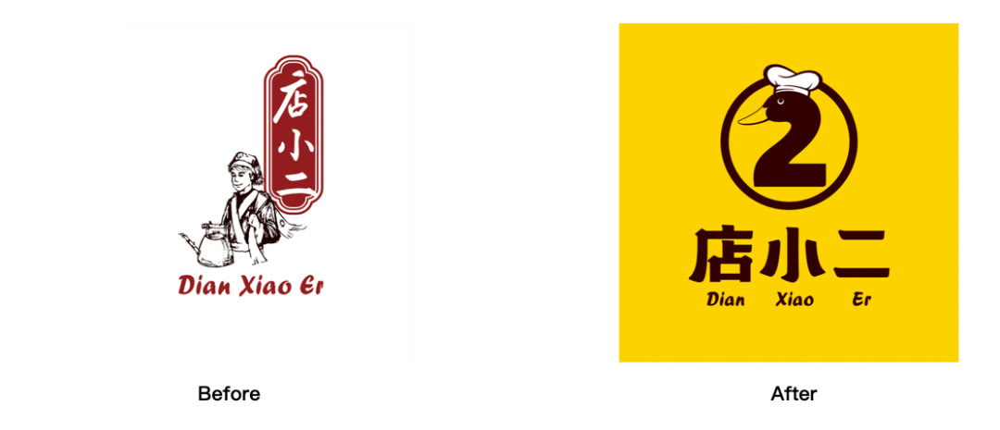
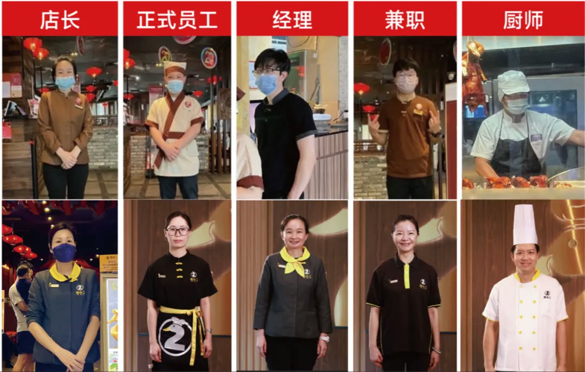

01 · 战略
品牌先明确自己代表什么
项目从企业能力、菜品和顾客认知中提炼店小二的角色与文化价值，使后续设计有统一判断标准。

02 · 符号
用熟悉文化原型降低理解成本
店小二角色连接中式餐饮的共同记忆，并通过私有化设计进入门头、菜单和服务体验。

03 · 元媒体
门店是品牌传播主阵地
外立面、入口、菜单与空间共同重复品牌核心信息，使每一家店在营业时自动完成传播。

04 · 日历
用超级道具建立固定营销节点
可重复使用的道具把活动主题、门店体验和顾客参与连接起来，逐年形成稳定期待。
